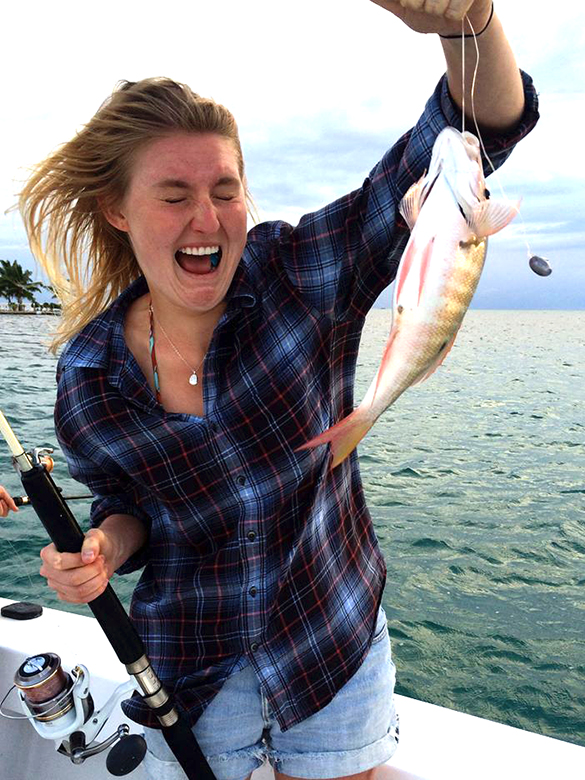

Landis Powell
Nickname/Rapper Name: Landis Powell
Year in School: 2012?
School/Major: Chemistry & Geophysics
Hometown: Just a lil' place called San Francisco
Medical Training: WFA
Wash U Activities: WP (duh..!); Reflections (a.k.a lovin' my body); FREE FOOD
Spirit Flora/Fauna: llama & redwood
Title of Your Autobiography: How To Find Your Way To The Bottom Of a Peanut Butter Jar In 2 Days
Favorite Wildersnack: ... surprisingly not peanut butter - just trail mixxx
Crunchy or Creamy Peanut Butter?: Crunchy, but without the nuts
Weird Body Fact: My body literally hates me. Like it does everything in its power to destroy me no matter how well I take care of it. It is actually the worst! Also when I was hunger I cracked my forehead open while mountain biking. But I promise that has nothing to do with my body's revolution now.
Favorite Type of Cheese: Camembert; Buffalo Mozzerella; Manchego; Rembrandt Gouda; Goat; Aged Cheddar; Trader Joe's Cranberry Feta
Describe WP in 5 Words: Snuggly; Smelly; Sticky; Sweaty; Enjoyable
What is Your Favorite Place in the World? In the Ocean!!!
How many WP leaders does it take to screw in a lightbulb? this question doesn't make any sense... there are no light bulbs amongst the trees!
Favorite Quotation: "Marilyn Monroe once said "If you don't appreciate me at my best, you don't deserve me at my worst."" - Alan Liu
What causes the emission of short bursts of light from imploding bubbles in a liquid when excited by sound?: 1. Is this a real science question? 2. Is the answer LogoBeef? Because I feel like it is 3. I just googled this 4. This phenomenon is called SONOLUMINESCENCE 5. The correct answer is a sound wave of sufficient intensity ... who even wrote this??
Your greatest adventure:Ask me About it!
Advice for an Incoming Freshman: "Drink lots and lots and lots of water. Literally everything is on the Interwebzz Crying is ok (but we are not allowed to laugh) Learn something new once a week. I was about to say everyday, but that felt a little demanding."
Solve for x: NO MORE MATH